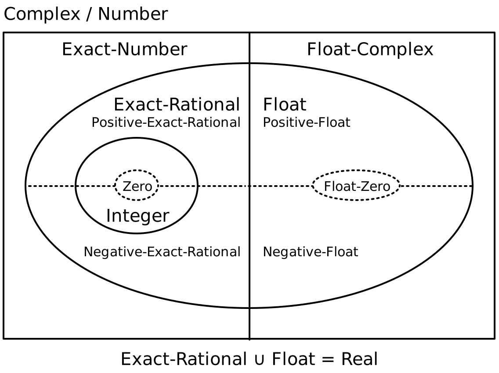
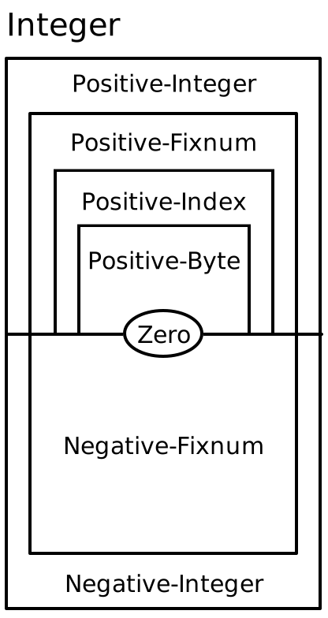

1 Type 参考
type
type
type
1.1 基本类型
1.1.1 数字类型
这些类型代表了 Racket 的 numbers 层次结构。 下图显示了层次结构中各类型之间的关系。

带有实心边框的区域是数字层次结构的 layers ,对应于整数或有理数等数字集合。 包含在另一个层中的层是包含它们的层的子类型。 例如, Exact-Rational 是 Exact-Number 的一个子类型。
Real 层也被划分为正数和负数类型(用虚线表示)。 Integer 层又分为几个固定宽度的整数类型,在本节后面详细介绍。
type
type
type
type
type
type
type
type
type
type
type
type
type
Changed in version 1.7 of package typed-racket-lib: 增加了 Imaginary, Inexact-Complex, Exact-Complex, Exact-Imaginary, Inexact-Imaginary.
如果你想执行更严格的约束,上述类型可以被细分为更精确的类型。 Typed Racket 为上述类型的正数、负数、非负数和非正数子集提供了类型(如适用)。
type
type
type
type
type
type
type
type
type
type
type
type
type
type
type
type
type
type
type
type
type
type
type
type
type
type
type
type
type
type
type
type
type
type
type
type
type
type
type
type
type
type
type
type
type
type
type
type
type
这些类型在强制要求数值具有特定符号时非常有用。 然而,当类型检查器不能保证符号约束得到遵守时,使用它们的程序可能需要额外的动态检查。
除了按符号划分外,整数还被进一步细分为有范围约束的类型。 大多数有范围限制的类型之间的关系显示在这个图中:

和上一个图一样,图中嵌套在另一类型内的类型是其包含类型的子类型。
type
type
type
type
type
type
type
type
type
type
这些类型对于强制执行数值的界限是很有用的,但是鉴于这些类型提供的封闭属性数量有限,可能需要动态检查来在运行时检查所需的界限。
> 7 - : Integer [more precisely: Positive-Byte]
7
> 8.3 - : Flonum [more precisely: Positive-Float-No-NaN]
8.3
> (/ 8 3) - : Exact-Rational [more precisely: Positive-Exact-Rational]
8/3
> 0 - : Integer [more precisely: Zero]
0
> -12 - : Integer [more precisely: Negative-Fixnum]
-12
> 3+4i - : Exact-Number
3+4i
type
type
type
type
type
type
type
type
type
1.1.2 其他基本类型
type
type
type
type
type
type
type
type
type
type
type
type
type
type
type
type
type
type
type
type
type
type
type
type
type
type
type
type
type
type
type
type
type
type
type
type
type
type
type
type
type
type
type
type
type
type
type
type
type
type
type
type
type
type
type
type
type
> #t - : True
#t
> #f - : False
#f
> "hello" - : String
"hello"
> (current-input-port) - : Input-Port
#<input-port:string>
> (current-output-port) - : Output-Port
#<output-port:string>
> (string->path "/") - : Path
#<path:/>
> #rx"a*b*" - : Regexp
#rx"a*b*"
> #px"a*b*" - : PRegexp
#px"a*b*"
> '#"bytes" - : Bytes
#"bytes"
> (current-namespace) - : Namespace
#<namespace>
> #\b - : Char
#\b
> (thread (lambda () (add1 7))) - : Thread
#<thread>
type
1.2 单例类型
某些类型的数据被默认为单子类型。 特别是, booleans, symbols 和 keywords 的类型只由特定的布尔值、符号或关键字组成。 这些类型分别是 Boolean, Symbol 和 Keyword 的子类型。
> #t - : True
#t
> '#:foo - : '#:foo
'#:foo
> 'bar - : 'bar
'bar
1.3 基本类型构造函数和超类型
type constructor
(Pairof s t)
> (cons 1 2) - : (Pairof One Positive-Byte)
'(1 . 2)
> (cons 1 "one") - : (Pairof One String)
'(1 . "one")
type constructor
(Listof t)
type constructor
(List t ...)
type constructor
(List t ... trest ... bound)
type constructor
(List* t t1 ... s)
> (list 'a 'b 'c) - : (List 'a 'b 'c)
'(a b c)
> (plambda: (a ...) ([sym : Symbol] boxes : (Boxof a) ... a) (ann (cons sym boxes) (List Symbol (Boxof a) ... a)))
- : (All (a ...)
(-> Symbol (Boxof a) ... a (Pairof Symbol (List (Boxof a) ... a))))
#<procedure>
> (map symbol->string (list 'a 'b 'c)) - : (Pairof String (Listof String))
'("a" "b" "c")
type constructor
(MListof t)
type constructor
(MPairof t u)
type
type constructor
(Boxof t)
> (box "hello world") - : (Boxof String)
'#&"hello world"
type
type constructor
(Vectorof t)
type constructor
Added in version 1.9 of package typed-racket-lib.
type constructor
(Mutable-Vectorof t)
Added in version 1.9 of package typed-racket-lib.
type constructor
(Vector t ...)
> (ann (vector 1 'A) (Vector Fixnum 'A)) - : (U (Immutable-Vector Fixnum 'A) (Mutable-Vector Fixnum 'A))
'#(1 A)
type constructor
(Immutable-Vector t ...)
> (vector-immutable 1 2 3) - : (Immutable-Vector One Positive-Byte Positive-Byte)
'#(1 2 3)
Added in version 1.9 of package typed-racket-lib.
type constructor
(Mutable-Vector t ...)
> (vector 1 2 3) - : (Mutable-Vector Integer Integer Integer)
'#(1 2 3)
Added in version 1.9 of package typed-racket-lib.
type
> (flvector 1.0 2.0 3.0) - : FlVector
(flvector 1.0 2.0 3.0)
type
> (extflvector 1.0t0 2.0t0 3.0t0) - : ExtFlVector
#<extflvector>
type
> (fxvector 1 2 3) - : FxVector
(fxvector 1 2 3)
type
type constructor
(HashTable k v)
> (ann (make-hash '((a . 1) (b . 2))) (HashTable Symbol Integer)) - : (HashTable Symbol Integer)
'#hash((a . 1) (b . 2))
type constructor
(Immutable-HashTable k v)
> #hash((a . 1) (b . 2)) - : (Immutable-HashTable Symbol Integer)
'#hash((a . 1) (b . 2))
Added in version 1.8 of package typed-racket-lib.
type constructor
(Mutable-HashTable k v)
> (make-hash '((a . 1) (b . 2))) - : (Mutable-HashTable Symbol Integer)
'#hash((a . 1) (b . 2))
Added in version 1.8 of package typed-racket-lib.
type constructor
(Weak-HashTable k v)
> (make-weak-hash '((a . 1) (b . 2))) - : (Weak-HashTable Symbol Integer)
'#hash((a . 1) (b . 2))
Added in version 1.8 of package typed-racket-lib.
type
type constructor
(Setof t)
> (set 0 1 2 3) - : (Setof Byte)
(set 0 1 2 3)
> (seteq 0 1 2 3) - : (Setof Byte)
(seteq 0 1 2 3)
type constructor
(Channelof t)
> (ann (make-channel) (Channelof Symbol)) - : (Channelof Symbol)
#<channel>
type
type constructor
(Async-Channelof t)
> (require typed/racket/async-channel) > (ann (make-async-channel) (Async-Channelof Symbol)) - : (Async-Channelof Symbol)
#<async-channel>
Added in version 1.1 of package typed-racket-lib.
type
Added in version 1.1 of package typed-racket-lib.
type constructor
(Parameterof t)
(Parameterof s t)
> current-input-port - : (Parameterof Input-Port)
#<procedure:current-input-port>
> current-directory - : (Parameterof Path-String Path)
#<procedure:current-directory>
type constructor
(Promise t)
> (delay 3) - : (Promise Positive-Byte)
#<promise:eval:52:0>
type constructor
(Futureof t)
type constructor
(Sequenceof t t ...)
type
Added in version 1.10 of package typed-racket-lib.
type constructor
(Custodian-Boxof t)
type constructor
(Thread-Cellof t)
type
type constructor
(Weak-Boxof t)
> (make-weak-box 5) - : (Weak-Boxof Integer)
#<weak-box>
> (weak-box-value (make-weak-box 5)) - : (U False Integer)
5
type
type constructor
(Ephemeronof t)
type constructor
(Evtof t)
> always-evt - : (Rec x (Evtof x))
#<always-evt>
> (system-idle-evt) - : (Evtof Void)
#<system-idle-evt>
> (ann (thread (λ () (displayln "hello world"))) (Evtof Thread))
- : (Evtof Thread)
hello world
#<thread>
1.4 语法对象
下面的类型构造函数和类型分别创建和表示 syntax object 及其内容。
type constructor
(Syntaxof t)
type
type
type
type constructor
(Sexpof t)
type
type
1.5 控制类型
下面的类型构造函数和类型分别创建和 prompt tag 标签和 continuation mark 的键, 以便与分隔的继续函数和继续标记函数一起使用。
type constructor
(Prompt-Tagof s t)
t 的域决定了可以使用 abort-current-continuation 向带有此提示标记的提示符中止的值的类型。
> (make-continuation-prompt-tag 'prompt-tag) - : (Prompt-Tagof Any Any)
#<continuation-prompt-tag:prompt-tag>
type
type constructor
> (make-continuation-mark-key 'mark-key) - : (Continuation-Mark-Keyof Any)
#<continuation-mark-key>
1.6 其他类型构造函数
type constructor
(-> dom ... rng opt-proposition)
(-> dom ... rest * rng) (-> dom ... rest ooo bound rng) (dom ... -> rng opt-proposition) (dom ... rest * -> rng) (dom ... rest ooo bound -> rng)
ooo = ... dom = type | mandatory-kw | opt-kw rng = type | (Some (a ...) type : #:+ proposition) | (Values type ...) mandatory-kw = keyword type opt-kw = [keyword type] opt-proposition =
| : type |
: pos-proposition neg-proposition object pos-proposition =
| #:+ proposition ... neg-proposition =
| #:- proposition ... object =
| #:object index proposition = Top | Bot | type | (! type) | (type @ path-elem ... index) | (! type @ path-elem ... index) | (and proposition ...) | (or proposition ...) | (implies proposition ...) path-elem = car | cdr index = positive-integer | (positive-integer positive-integer) | identifier
第二种形式指定一个类型为 rest 的统一休止符参数, 第三种形式指定一个类型为 rest 的非统一休止符参数,并带有 bound 边界。 绑定指的是在rest参数类型范围内的类型变量。
> (λ ([x : Number] y : String *) (length y)) - : (-> Number String * Index)
#<procedure>
> ormap
- : (All (a c b ...)
(-> (-> a b ... b c) (Listof a) (Listof b) ... b (U False c)))
#<procedure:ormap>
在第三种形式中,由 ooo 引入的 ... 是字面的, 而 bound 必须是一个表示类型变量的标识符。
dom 可以包括强制和可选的关键字参数。 强制性的关键字参数是一对关键字和类型,而可选的参数被一对括号所包围。
> (:print-type file->string) (-> Path-String [#:mode (U 'binary 'text)] String)
> (: is-zero? : (-> Number #:equality (-> Number Number Any) [#:zero Number] Any))
> (define (is-zero? n #:equality equality #:zero [zero 0]) (equality n zero)) > (is-zero? 2 #:equality =) - : Any
#f
> (is-zero? 2 #:equality eq? #:zero 2.0) - : Any
#f
当提供 opt-proposition 时, 它指定了函数类型的 proposition (关于 Typed Racket 中命题的介绍,请参见 命题和谓词)。 对于几乎所有的用例来说,只有最简单的命题形式,即在 : 后面有一个单一的类型,是必要的:
> string? - : (-> Any Boolean : String)
#<procedure:string?>
该命题规定,当 (string? x) 对一个条件分支求值为真值时, 可以假定该分支中的变量 x 的类型为 String 。 同样地,如果表达式在一个分支中求值为 #f ,则该变量 不 具有 String 类型。
在某些情况下,不对称的类型信息在命题中是有用的。 例如, filter 函数的第一个参数只指定了一个正命题:
> filter
- : (All (a b)
(case->
(-> (-> a Any : #:+ b) (Listof a) (Listof b))
(-> (-> a Any) (Listof a) (Listof a))))
#<procedure:filter>
使用 #:+ 表示当应用于变量的函数求值为真值时,可以假定该变量的给定类型。 然而,在结果为 #f 的分支中,类型检查器没有获得任何信息。
反之, #:- 指定一个函数为条件的假分支提供信息。
其他的命题情况很少需要,但为了完整起见,语法记录了它们。 它们对应于对命题的逻辑操作。
函数的类型也可以用紧接在 rng 类型之前的 infix -> 来指定。 第四至第六种形式与前三种情况相匹配,但采用了箭头的 infix 样式。
目前,由于不支持存在类型的显式打包操作,存在类型的结果只被用来注释 Struct-Property 的访问器
(Some (a ...) type : #:+ proposition) 为 rng 指定一个 existential type result, 其中类型变量 a ... 可以出现在 type 和 opt-proposition 中。 在检查函数的应用时,会自动对存在型结果进行解包。
Changed in version 1.12 of package typed-racket-lib: 增加了 existential type results
type constructor
(->* (mandatory-dom ...) optional-doms rest rng)
mandatory-dom = type | keyword type optional-doms =
| (optional-dom ...) optional-dom = type | keyword type rest =
| #:rest type | #:rest-star (type ...)
> (: append-bar (->* (String) (Positive-Integer) String))
> (define (append-bar str [how-many 1]) (apply string-append str (make-list how-many "bar")))
如果提供的话, #:rest type 类型指定了 rest 参数列表中元素的类型。
> (: +all (->* (Integer) #:rest Integer (Listof Integer)))
> (define (+all inc . rst) (map (λ ([x : Integer]) (+ x inc)) rst)) > (+all 20 1 2 3) - : (Listof Integer)
'(21 22 23)
一个 #:rest-star (type ...) 指定休息列表是一个出现 0 次或更多次的类型序列(即序列的 Kleene 闭合)。
> (: print-name+ages (->* () #:rest-star (String Natural) Void))
> (define (print-name+ages . names+ages) (let loop ([names+ages : (Rec x (U Null (List* String Natural x))) names+ages]) (when (pair? names+ages) (printf "~a is ~a years old!\n" (first names+ages) (second names+ages)) (loop (cddr names+ages)))) (printf "done printing ~a ages" (/ (length names+ages) 2))) > (print-name+ages) done printing 0 ages
> (print-name+ages "Charlotte" 8 "Harrison" 5 "Sydney" 3)
Charlotte is 8 years old!
Harrison is 5 years old!
Sydney is 3 years old!
done printing 3 ages
必备和可选的参数列表都可以包含与类型配对的关键字。
这个类型构造器的语法与 ->* 合约组合器的语法相匹配,但是用类型代替了合约。
type
对于已知节数和参数类型的函数的类型,见 -> 类型构造器。
> (: my-list Procedure) > (define my-list list) > (my-list "zwiebelkuchen" "socca") eval:91:0: Type Checker: cannot apply a function with
unknown arity;
function `my-list' has type Procedure which cannot be
applied
in: "socca"
type constructor
(U t ...)
type constructor
(∩ t ...)
type constructor
(case-> fun-ty ...)
type
(t t1 t2 ...)
type
(Some (a ...) t)
Added in version 1.10 of package typed-racket-lib.
type constructor
(Values t ...)
> (values 1 2 3) - : (values Integer Integer Integer) [more precisely: (Values One Positive-Byte Positive-Byte)]
1
2
3
type
v
type
(quote val)
type
i
type
(Rec n t)
type
(Struct st)
type
(Struct-Type st)
> struct:arity-at-least - : (StructType arity-at-least)
#<struct-type:arity-at-least>
> (struct-type-info struct:arity-at-least)
- : (values
Symbol
Integer
Integer
(-> arity-at-least Nonnegative-Integer Any)
(-> arity-at-least Nonnegative-Integer Nothing Void)
(Listof Nonnegative-Integer)
(U False Struct-TypeTop)
Boolean)
[more precisely: (values
Symbol
Nonnegative-Integer
Nonnegative-Integer
(-> arity-at-least Nonnegative-Integer Any)
(-> arity-at-least Nonnegative-Integer Nothing Void)
(Listof Nonnegative-Integer)
(U False Struct-TypeTop)
Boolean)]
'arity-at-least
1
0
#<procedure:arity-at-least-ref>
#<procedure:arity-at-least-set!>
'(0)
#f
#f
type
> (struct-info (arity-at-least 0)) - : (values (U False Struct-TypeTop) Boolean)
#<struct-type:arity-at-least>
#f
type constructor
(Prefab key type ...)
Prefabs 是或多或少有标签的多态图元,可以直接序列化,其字段可以被任何人访问。 对于不可变的字段,子类型是共变的,对于可变的字段是不变的。
当用 struct 定义 prefab 结构时,结构名在类型级被绑定到 Prefab 类型上, 有相应的键和字段类型,构造函数期望与每个字段声明的类型相对应。 然而,定义的谓词只测试一个值是否是具有相同键和字段数量的 prefab 结构,但不检查字段的值。
> (struct person ([name : String]) #:prefab) > person - : (-> String person)
#<procedure:person>
> person? - : (-> Any Boolean : (Prefab person Any))
#<procedure:person?>
> person-name - : (All (x) (case-> (-> (Prefab person x) x) (-> (Prefab person Any) Any)))
#<procedure:person-name>
> (person "Jim") - : (Prefab person String)
'#s(person "Jim")
> (ann '#s(person "Dwight") person) - : (Prefab person String)
'#s(person "Dwight")
> (ann '#s(person "Pam") (Prefab person String)) - : person
'#s(person "Pam")
> (ann '#s(person "Michael") (Prefab person Any)) - : (Prefab person Any)
'#s(person "Michael")
> (person 'Toby) eval:112:0: Type Checker: type mismatch
expected: String
given: 'Toby
in: Toby
> (ann #s(person Toby) (Prefab person String)) eval:113:0: Type Checker: type mismatch
expected: person
given: (Prefab person 'Toby)
in: String
> (ann '#s(person Toby) (Prefab person Symbol)) - : (Prefab person Symbol)
'#s(person Toby)
> (person? '#s(person "Michael")) - : True
#t
> (person? '#s(person Toby)) - : True
#t
> (struct employee person ([schrute-bucks : Natural]) #:prefab) > (employee "Oscar" 10000) - : (Prefab (employee person 1) String Nonnegative-Integer)
'#s((employee person 1) "Oscar" 10000)
> (ann '#s((employee person 1) "Oscar" 10000) employee) - : (Prefab (employee person 1) String Nonnegative-Integer)
'#s((employee person 1) "Oscar" 10000)
> (ann '#s((employee person 1) "Oscar" 10000) (Prefab (employee person 1) String Natural)) - : employee
'#s((employee person 1) "Oscar" 10000)
> (person? '#s((employee person 1) "Oscar" 10000)) - : True
#t
> (employee? '#s((employee person 1) "Oscar" 10000)) - : True
#t
> (employee 'Toby -1) eval:123:0: Type Checker: type mismatch
expected: String
given: 'Toby
in: -1
> (ann '#s((employee person 1) Toby -1) (Prefab (employee person 1) Symbol Integer)) - : (Prefab (employee person 1) Symbol Integer)
'#s((employee person 1) Toby -1)
> (person? '#s((employee person 1) Toby -1)) - : True
#t
> (employee? '#s((employee person 1) Toby -1)) - : True
#t
type
(PrefabTop key field-count)
对于不可变的预制构件,这相当于 (Prefab key Any ...) ， field-count 为 Any 的许多次出现。 对于易变的预制构件,这描述了一个可以读出但不能写入的预制构件(因为我们不知道其他代码可能将字段打成什么类型)。
> (struct point ([x : Number] [y : Number]) #:prefab #:mutable) > point - : (-> Number Number point)
#<procedure:point>
> point-x
- : (All (a b)
(case->
(-> (Prefab (point #(0 1)) a b) a)
(-> (PrefabTop (point #(0 1)) 2) Any)))
#<procedure:point-x>
> point-y
- : (All (a b)
(case->
(-> (Prefab (point #(0 1)) a b) b)
(-> (PrefabTop (point #(0 1)) 2) Any)))
#<procedure:point-y>
> point? - : (-> Any Boolean : (PrefabTop (point #(0 1)) 2))
#<procedure:point?>
> (define (maybe-read-x p) (if (point? p) (ann (point-x p) Any) 'not-a-point))
> (define (read-some-x-num p) (if (point? p) (ann (point-x p) Number) -1)) eval:133:0: Type Checker: Polymorphic function `point-x'
could not be applied to arguments:
Types: (PrefabTop (point #(0 1)) 2) -> Any
Arguments: (PrefabTop (point #(0 1)) 2)
Expected result: Number
in: -1
Added in version 1.7 of package typed-racket-lib.
type constructor
(Struct-Property ty)
> (:print-type prop:input-port) (Struct-Property (U Exact-Nonnegative-Integer Input-Port))
Added in version 1.10 of package typed-racket-lib.
type
> (:print-type prop:custom-write) (Struct-Property (-> Self Output-Port (U Boolean One Zero) AnyValues))
Added in version 1.10 of package typed-racket-lib.
> (:print-type prop:equal+hash)
(Struct-Property
(List
(-> Self Imp (-> Any Any Boolean) Any)
(-> Self (-> Any Integer) Integer)
(-> Self (-> Any Integer) Integer)))
Added in version 1.10 of package typed-racket-lib.
type
(Has-Struct-Property prop)
type constructor
type constructor
type constructor
type constructor
type
1.7 其他类型
type constructor
(Option t)
type constructor
(Opaque t)